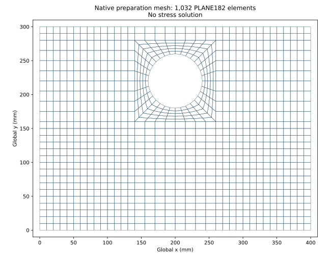

Padeye pressure preparation
Supplement to the consolidated solver-automation technical report.
1. Finding and authorization
The corrected coarse pressure model passes the defined native preparation gates. This finding covers load application, frozen geometry and element shape. A stress result, convergence conclusion and qualified golden case are not established.
The recorded user approval authorizes tests, a separate pressure generator, independent native verification and a no-SOLVE preparation probe. Stress solves remain gated pending a reviewed nonsingular reported quantity. The issue and draft pull request remain open.
2. Analysis basis
| Parameter | Value | Basis |
|---|---|---|
| Plate width × height (mm) | 400 × 300 | Frozen neutral model |
| Thickness (mm) | 8.000 | Plane-stress real constant |
| Hole radius; centre (mm) | 40; (200, 220) | Frozen geometry |
| Young's modulus (MPa); Poisson ratio (—) | 205,000; 0.3 | Inherited model inputs |
| Yield stress (MPa); design factor (—) | 355; 1.67 | Retained basis; no utilization calculation |
| Target force (N) | 50,000 in global +Y | Upper-hole radial pressure |
| Restraint | UX = UY = 0 at y = 0 | Unchanged base restraint |
3. Method
The continuous pressure is defined as p(θ) = p₀ sin(θ), radially outward on the upper hole, 0 ≤ θ ≤ π. With F = 50,000 N, R = 40 mm and t = 8.000 mm, p₀ = 2F/(πRt) = 99.4718394324 MPa. A discrete normalization factor of 1.006454542799641 is applied to the coarse polygonal faces. Native face values are independently integrated using two-point Gauss quadrature.
The generated deck specifies PLANE182 plane stress, material and thickness, explicit nodes and connectivity, the base constraints, and a Y-dependent native face-pressure gradient. Default shape checking, CHECK, shape status, shape summary, face listing and a CDB export are requested. No SOLVE or solution processor command is issued.
An initial mapped mesh extending directly to the outer rectangle failed the shape gate. The corrected mesh uses a compact circular-to-square mapped region and conforming outer rectangular blocks. Geometry, thickness, material, force and restraint remain frozen. The change was made before any stress outcome was available.
4. Native preparation results
| Capture (UTC) | Elements (—) | Elements with shape warnings (—) | Warning messages (—) | Disposition |
|---|---|---|---|---|
| 13 Sep 02:10:14 | 832 | 34 | 104 | Failed; retained |
| 13 Sep 02:15:34 | 1,032 | 0 | 0 | Coarse preparation passes |
| Quantity | Corrected coarse result | Criterion | Disposition |
|---|---|---|---|
| Applied FY (N) | 50,000.000023 | Force-vector error ≤ 50 N | Pass |
| Applied FX (N) | −3.41 × 10⁻¹³ | Target 0; included in vector error | Pass |
| Moment about hole centre (N mm) | −3.41 × 10⁻¹² | Absolute moment ≤ 2,000 N mm | Pass |
| Shape coverage (elements) | 1,032 of 1,032 | All selected; default limits; zero warnings/errors | Pass |
| Outer perimeter (mm) | 1,400 | Complete frozen 400 × 300 mm boundary | Pass |
| Area (mm²) | 115,005.687756 | Plate less the 32-edge polygonal hole | Pass |

| Nominal level (mm) | Upper-hole faces (—) | Ring layers (—) | Nodes (—) | Elements (—) | Evidence readiness |
|---|---|---|---|---|---|
| 10 | 16 | 5 | 1,110 | 1,032 | Offline and native preparation |
| 5 | 32 | 10 | 4,284 | 4,128 | Offline only |
| 2.5 | 64 | 20 | 16,824 | 16,512 | Offline only |
5. Verification and review
The offline ANSYS suite passed 600 tests; two native tests were deselected. A final focused run passed 19 bundle/domain tests after fixture whitespace and test-coordinate corrections. Tests were added and observed failing before their implementation. Existing equal-force generator hashes remain unchanged; all three pressure input hashes are pinned.
Claude and Codex reviews returned MAJOR findings during two review rounds. Main-session corrections subsequently added full-domain enforcement, current native shape-status interpretation, composed artifact checks, frozen input hashes, production-mesh integration tests, explicit log artifact classes and rehashed semantic-rejection tests. The review record preserves those verdicts; no final provider APPROVE verdict is asserted. The inline disposition records the evidence for each correction.
The scoped legal scan passed on 18 exact current code/test blobs. The native audit re-read and verified 14 captured artifact hashes across the failed and corrected preparations. Input commands, executable identity, native output version, pressure faces, domain, shape and process/seat-release receipts were checked. The corrected input bytes and native mesh were also compared with the current generator.
6. Limitations and next checkpoint
A nonsingular reported stress quantity has not been established. Consequently, stress utilization, stress convergence and physical qualification cannot be calculated from this preparation. The earlier equal-node-force diagnostic cannot be relabelled as a pressure result. No golden case or registry qualification is promoted.
The next recommended step is a reviewed definition of the reported quantity and its extraction region, together with a restraint assessment. Any proposed change to the fixed base or governing quantity will require a separate reviewable proposal before stress execution. Fine-level native preparation remains unverified.
The native CDB fixture is a verbatim neutral-model export. The public shape text is a labelled format reproduction, not the raw solver log. Full logs remain in local licensed-results storage; independent backup has not been established. The bundle verifier checks bytes against a caller-attested receipt and then applies semantic gates; a matching hash does not authenticate the receipt or independently prove its source revision.
This supplement makes no new fleet-wide cleanup claim. The preceding consolidation established direct evidence for four of seven machine routes; unavailable routes, including ws014 access, remain outside verified coverage.
7. Evidence and traceability
- Approved load-model addendum and original consolidated technical report.
- Native preparation audit and artifact digests; corrected capture source
a44cbb0df1588788f69b2c8774063e4a0e04838b. - Fixture provenance and verbatim native CDB.
- Scoped legal-scan receipt.
- Issue 2094 and draft PR 2114.